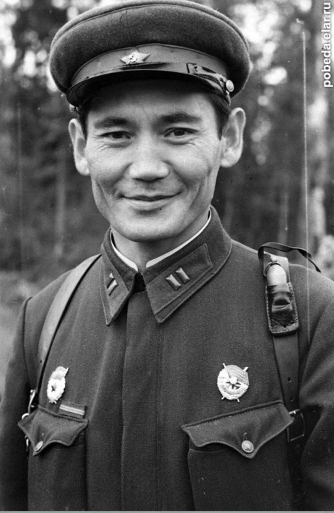
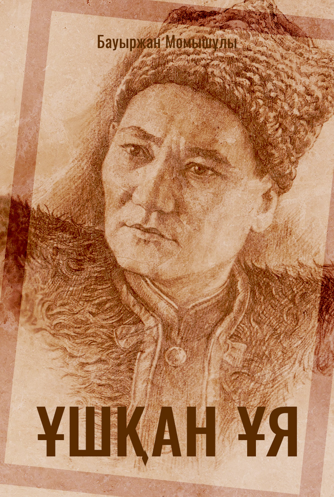
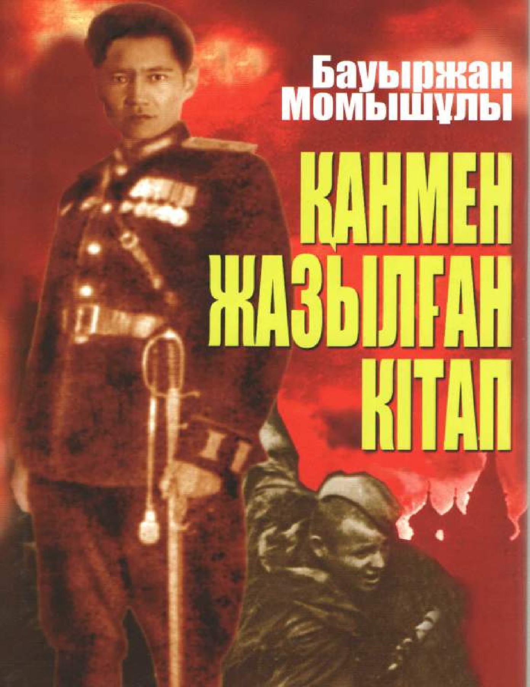

Бауыржан Момышұлы
1910-1982
Тәртіпке бас иген — құл болмайды, тәртіпсіз – ер болмайды.
«Өмірдің мәні – өзіңді табу.»
«Қиындықсыз жеңіс болмайды.»
«Адамды қиындық сынайды, бақыт шығарады.»
«Жүректен шыққан сөз – жүрекке жетеді.»
«Сөз адамның күші емес, ақылының көрсеткіші.»
«Әр адам өз бақытының қожайыны.»
«Адамға ең қымбат нәрсе – уақыт.»
«Ұлы болғың келсе, алдымен кіші болуды үйрен.»
«Бақыт – кішкентай нәрселерде.»
«Өзгені өзгерту қиын, бірақ өзіңді өзгерту жеңіл.»
«Жақсы адам – шыншыл, әділ, мейірімді болады.»
«Ұстамдылық – адамның ішкі күшінің белгісі.»
«Күштің ең үлкені – сабыр.»
«Адам ең алдымен өзіне адал болуға тиіс.»
«Жақсы сөз – жарым ырыс.»
«Ерлік – жүректен шығады.»
«Қайғы – жанның дауысы.»
«Тек алға жүру керек, тек алға!»
«Ер адамның ұяты – оның сөзінде.»
«Өмірдің ең үлкен байлығы – бақытты болу.»
«Тіл – адамның айнасы.»
«Өзіңді тану – өмірдің басты мақсаты.»
«Әрбір сәтте өмірді сүру керек.»
«Үлкенді сыйлау – адамдықтың басты белгісі.»
«Бақытты болу үшін тек бір нәрсе керек – жақсы көңіл-күй.»
«Тек өз күшіңе сен!»
«Жалғыз адам – ештеңе емес.»
«Күлкі – өмірдің ең жақсы серігі.»
«Таңғажайып өмір – таңғажайып адамдармен болады.»
«Мейірімді бол, себебі мейірім – күштілік пен жеңістің кілті.»
«Шындықтың жолы қиын, бірақ ол ең мықты жол.»
«Адал еңбек – зор жеңіс.»
«Қиял – адамның қанаты.»
«Тек алға жүріп қана сен өзіңді таба аласың.»
«Жауапкершілік – ұлы күш.»
«Адам өз өмірінің авторы.»
«Өмірдің мәні – адамдарға пайдалы болу.»
«Бір шаңырақтың астында тұру – бір отбасы болу.»
«Кешірім – адамдықтың белгісі.»
«Өз қалауыңа жету үшін өзіңді жақсарт!»
«Бірлік – күштің көзі.»
«Қандай қиындық болса да, оған төтеп беру керек.»
«Адамның басты байлығы – оның достары мен жақындары.»
«Үнемі қолдау көрсету – адамның тірегі.»
«Тек жақсы адамдармен бірге бол.»
«Ең бастысы – шыншыл болу.»
«Құндылықтарды дұрыс бағалауды үйрен.»
«Өмірді кішкентай қуаныштармен сүру керек.»
«Мақсатқа жету үшін тек еңбектену керек.»
«Әр адам өзін жақсы жағын көруі тиіс.»
«Шын бақыт – адамның өз ішіндегі тыныштықта.»
«Өмірдің басты мақсаты – сүйіспеншілік пен мейірімділік көрсету.»
«Адамдар тек қана өздеріне лайықтыларды тартады.»
«Өз ойыңды ашық айтып үйрен.»
«Жақсы ойлар мен жақсы сөздер – жүректен шығады.»
«Әр адам өз жолын табуы тиіс.»
«Бақыт – оны сезіну.»
«Жақсы дос – өмірдегі ең қымбат адам.»
«Ұлы болғың келсе, алдымен кішіпейіл бол.»
«Бақыт – қазіргі сәттің бағасын білуде.»
«Жақсы көңіл – адамның денсаулығының кепілі.»
«Күші жоқ адамның жүрегі де әлсіз.»
«Өзіңді шыңдай отырып, өзгелерге көмектес.»
«Өмірдегі ең үлкен жетістік – тыныштық.»
«Қиындықтар адамды нығайтады.»
«Сенім мен іскерлік – адами қарым-қатынастың негізі.»
«Әр күніңді қуанышпен қарсы ал!»
«Өмірді күлімсіреп қабылдау – ең жақсы шешім.»
«Жақсы істер – жүректен шығады.»
«Ешқашан өз ар-ұжданыңды сатпа.»
«Жақсы сөз – жанға дауа.»
«Өзіңе сен, өз мүмкіндігіңді шектеме.»
«Ең үлкен байлық – тыныштық пен жылу.»
«Өмірдің мақсаты – жақсылық жасау.»
«Үлкендерді сыйла, олардан көп нәрсе үйренесің.»
«Қиындық тек уақытша, ал адамдық мәңгі.»
«Өмір тек бір рет беріледі, сол себепті оны толық сүру керек.»

«Ұяда не көрсең, ұшқанда соны ілесің.»
«Тектіден текті туады, текті туған – жеті атасын біледі.»
«Атадан ұл туса игі, ата жолын қуса игі.»
«Өмір – күрес. Күресе білмеген өмір сүре де білмейді.»
«Ана – бәрінен биік, бәрінен қымбат.»
«Ұлдың ұяты – әкеге, қыздың ұяты – шешеге.»
«Адам болам десең, әуелі бала тәрбиесін дұрыс баста.»
«Тәрбиесіз берілген білім – адамзаттың қас жауы.»
«Адамның бағы — адамгершілік қасиетінде.»
«Тектілік — тілден, жүректен, ниеттен білінеді.»
«Ата-ананың қадірін білмеген — халықтың да қадірін білмейді.»
«Елін сүйген ер оңбайды.»
«Мейірім — адамның ең үлкен байлығы.»
«Кісі елінде сұлтан болғанша, өз еліңде ұлтан бол.»
«Өзіңді-өзің тану — ең үлкен жеңіс.»
«Бала — бауыр етің. Оны тәрбиелеу — әке мен ананың ең қасиетті
борышы.»
«Адалдық — ардың ісі, ар — адамның құны.»
«Өсекке ерген — өзін жоғалтады.»
«Кішіпейілділік — адамдықтың белгісі.»
«Өмір сені қыспаққа алса, сынба, бірақ иіл.»
«Тәртіпке бағынған құл болмайды, тәртіпсіз ел болмайды.»
«Опасызда Отан жоқ.»
«Арсыздан айуан артық.»
«Ұлтқа қызмет ету – білімнен емес, мінезден.»
«Адам өз мінезінің құлы емес, иесі болуы керек.»
«Отан үшін отқа түс – күймейсің.»
«Ерлік – елге мұра, ұрпаққа – үлгі.»
«Сабыр түбі – сары алтын.»
«Жауынгердің өлімі – елдің өмірі үшін.»
«Батырлық – табиғи талант емес, тәрбиенің жемісі.»
«Ақылдының сөзі – алтыннан да қымбат.»
«Қарапайымдылық – кісіліктің көрінісі.»
«Жақсының шарапаты – қырық жылға жетеді.»
«Күшіңе сенбе, ісіңе сен.»
«Қиындық – ерге сын.»
«Шындық – ащы, бірақ ол – шын.»
«Ер – ел үшін туады, ел – ер үшін өледі.»
«Өмір сүру – өнер, ал оны ұғынып сүру – даналық.»
«Өтірікпен өрге шыққанша, шындықпен жерге кір.»
«Жақсы сөз – жанға тыныштық.»
«Өзіңе сен, өзіңді қамшыла!»
«Жаман әдет – жұқпалы дерт.»
«Қызға қырық үйден тыйым.»
«Балаға бас-көз болу – болашаққа жол ашу.»
«Ердің ісі – елге мұра.»
«Жақсы әке – жаман балаға үлгі.»
«Еңбек – ерді өсіреді.»
«Қанмен жазылған тәртіп – жеңістің кілті.»
«Ұят – адамның ішкі күзетшісі.»
«Кең пейіл – кемел адамның белгісі.»
«Көпті көрген – көсем, сөзді білген – шешен.»
«Кісіні сырттай сынама – өзіңнен баста.»
«Қызмет қыл даңқ үшін емес, халық үшін.»
«Қарсыласың күшті болса, өзіңді қамшыла!»
«Бір күндік ұрыс – жүз күндік дайындықтан туады.»
«Ең жаман жау – ішкі жау.»
«Тәлімсіз өскен жас – жауынсыз шыққан шөппен тең.»
«Ұят кетсе, адамдық та кетеді.»
«Ар-ождан – адам бойындағы көрінбейтін күзет.»
«Сөз қадірін білмеген – өз қадірін білмейді.»
«Кісі болғың келсе – кітап оқы.»
«Өнерлі ұл – өрге озар.»
«Сын сағатта сыр бермеу – ерлік.»
«Батыр туса – ел ырысы.»
«Салмақты сөз – саналы ойдан туады.»
«Ең асыл мұра – тәрбие.»
«Шешендік – тілдің емес, ойдың қасиеті.»
«Әдеп – адамгершілік бастауы.»
«Жеңіске – жүрекпен жетеді.»
«Төзім – жеңістің серігі.»

Армия — мемлекетті сырткы және ішкі жаулардан корғауға арналған
ұйымдаскан, тәртіпті мемлекеттін қарулы күші, армияда адамның рухани
күші мен кажыр-кайраты қалыпты әрі жоспарлы жұмыс жургізу үшін катаң
тәртіпке бағынады. Адамның ақыл-ойы, сезімі, еркі армияда әскери істі
үйреніп білудегі арнаулы (әскери) бағыттарда және арнаулы әскери
міндеттерді атқаруда дамып, жетіледі, қштала туседі, көрініс табады.
Ұйымдаскан күш ретінде армиядагы адамдардың қимыл-әрекеті, күштің
бағытталуы және мақсатқа ұмтылушылықты әскери парызды терең тусінуге
негізделеді де, бағынуға, командованияға сүйінеді.
Әскери айбындылық — ешнәрсемен де есептеспей, жан аямай батылдықпен
женіп шығу. Әскери айбындылық тәртіп пен ерліктен (күш-қуат, өзін-өзі
ұстау, табандылық және қапармандық) ептілік, денсаулық, күш-қуат,
сергектіктен тұрады. Командирлер адам күші мен материалдык кұралдарды,
яғни аз шытындармен жауынгерлік міндеттерді орындаган кезде моральдық,
материалдық және ұрыса білу, жауынгерлік қабілетті сақтай білуге
ұмтылуга тиіс.
Өзара көмек корсету және коллектившілдік сезімі - әскери парыздың
маңызды да міндетті элементі, жолдастық, топтык-қогамдық сезімнін асыл
белгісі. Адамның басына түскен қайғыны белісе білушілік - адамның
бойында коллектившілдік сезімді тәрбиелеудің нәтижесі, ортақ максатқа
жетуге көмектесу, жолдасыңның казаға ұшырауы оның өзін де әлсірететін
тікелей қауіп екенін, ортак максатқа жетумен және өз басын сақтап қалу
мумкіндіктерін азайтатынын білдіретінін сезе отырып, бар күш-қуатымен,
қабілет-карымымен жауынгер колективтің бөлшектеніп ыдырап кетуіне жол
бермеу.
Сезім — тән мен жаннынэң белгілі бір жағдайдағы күйі, яғни біздің
сыртқы дүниені қабылдау және оған жауап беру, реакция жасау
кабілетіміз. Сезім: тән (физикалық), немесе оны кейде төменгі сезім
деп те атайды, яғни оны организмнің (ауырсыну, шеліркеу, аштық,
суықтық және т. б.) физикалық күйі анықтайды. Рухани немесе кейде
жоғарғы деп те аталынатын - яғни адамның көңілін аударып, жан дуниесін
астан-кестен ететін сезім — оған махаббат, жеккөрушілік, ашу-кек, ыза
сезімі және сол сияқты ақиқат, әділдік сезімі, шындық, өтірік және т.
б. сиякты ұғымдар да жатады.
Әсер - адамның психикасын қоздыратын немесе басатын жағымды немесе
жағымсыз туйсік сезім. Әсер сезімі физикалык та, сондай-ак бұл сөздің
рухани мағынасында да адамның кызметіне тікелей ықпал ете отырып,
адамды қайраттандыра түсуге, оның бойындағы күш-қуаттың артып, болмаса
әлсіреуіне себепші болады. Бізге бәрінен де гөрі әскери тәрбиеде
жауынгерлік қасиеттерді дарытудың моральдык және адамгершілік
негіздері ретіндегі сезімдердің ең жоғарғы көрінісін білу, зерттеу
және тусіну маныздырақ.
Парыз - өзінің мағыналық аясына ақыл, сезім, ерік, абырой, ар-ождан,
ділдік, шындық, махаббат тағы басқа да мәселелерді қамтып, оларға
адамның қызмет аясындағы кайшы кұбылыстарды қарама-қарсы қоятын ен
жоғарғы интеллектуалдық ұтым.
Абырой — жеке адамның ар-намысын ұтыну деген сөз. Абыройды, жоғары
моральдық рухты сақтау жолында өз өмірін киюға дейін баруга ниет ету —
намыс деп аталады. Уят — жасаған әрекетінің жеңсіздігін түсінушілік.
Намысқа кір келтірушілік, моральдық рухтың асқақтығын қорлау — масқара
болушылық сенімділік, соғыс пен ұрыстағы сенімділік - дұшпаннан басым
түсу сезімі, өзінің жеке басынын ар-намысын сезіну. Сенімділікке істі
білу мен жауынгерлік рухты көтеру арқылы кол жетеді. Жігерлендіру
дегеніміз — рухани күш беру, куш-куаттың тасуы, сергектік күй. Әскерді
жігерлендірудін кұралдары мыналар: набатылықпен, кішіпейілділікпен
ықпал ету, адамның адамгершілігін құрметтеу, бастықтың жеке өнегесі,
ақыл-кенес беру, айтканын түсінікті етіп ұғындыру, көнілден шыққан
карапайым сөз, тапқырлық, шешендік, орынды айтылған зіл-қалжын,
ойын-күлкі, ән-күй, жауынгерлік және басқа да әндерді айту, би билеу
мен белімшелердегі басқа да көркем өнерпаздық жатады.
Ақыл - таниды, анықтайды, тапсырма береді, жоспарлайды, іс-кимылдың
әдіс-тәсілдерін және мақсатқа жету жолдарын көрсетеді.
Ерік - кұралдарды іс-әрекетке, қимылга келтіреді, бұйрық, жарлықты
орындайды, күш-қуатты демейді, яғни ерік дегеніміз — өз бетінше шешім
қабылдау қабілеттілігі мен қабылдаған шешімді тәжірибе жүзінде жүзеге
асыру қабілеттілігінің үйлесімділігі. Сезім — пайдалы қызметті
арттырады, еңбек өнімділігін жоғары шегіне немесе құлдырауға,
іс-әрекетсіздікке дейін көтереді немесе төмендетеді. Ар - парыздын
қаншалықты дәрежеде орындалғанын таразыға салады, көңіл күйі мен
адамның қызметіне қозғау салып, оятады — сонын әсерінен бойдағы
күш-қуат артып немесе кемиді, сергектік (мақтаныш), орындалған парыз
немесе орындалмай калған парыз үшін жанды жегідей жеген уяттан азап
шегіп, мұн басып, ұнжырғасының тусуін саналы түрде түсінеді.
Назар — ерік-жігердің аландаушылық күйі — өзінің барлық болмысымен
құбылысты тану, қабылдау және оларды міндеттерді айқындау мақсатымен
мида қорытуға көңілді аудару. Ынтасыздық - әртүрлі себептермен
ерік-жігердің босансуы, жинақсыздығы, тұраксыздығы. Салақтық — істі
аяғына жеткізуге дейін еріктің әлсіреуі, нашарлауы, божырауы. Күш,
қайрат - қажыр-кайраттың, ерік-жігердің тас түйіндей туйілуі, алға
қойган міндеттерді орындап шығу үшін ақыл-ой, жүйке , бұлшық ет күшін
жұмылдыру. Табандылык — барлық күш-қуатын арту, ширығу күйі,
сәтсіздіктің тақсіретін басу, белгіленген мақсатқа калайда жетуге
ұмтылу. Өзін-өзі ұстай білу — ақыл-ойды, ерік-жігерді, кұлшынысты,
сезімді өз еркіне бағындыруға, адамның бул касиеттерін ұрыс жағдайына
байланысты тән пайдалана білуге, сабырлы әрі парасатты шешім
қабылдауға қабілеттілік. Инициатива, бастаманы қолга алу — әркімнін өз
қалауына, еркіне қарай, жауапкершілікті өз мойнына алып, әрекет ету
кабілеті.
Әскери кұрмет — әскери ерлігі үшін халык атынан білдіретін алғыс.
Нағыз жауынгерлерді тәрбиелеуде дәстурдің алатын орны зор.
Сасу — тобырға қорқыныштың таралуы. Үрей, қорқыныш, зәресі, үрейі ұшу,
сасу өзін-өзі сақтау инстинктінің келенкелі жақтарынан, бір қалыпты
әрі қауіпсіз тіршілікті аңсаудан туады.
Өзінің пікірін бәріне бірдей үзілді-кесілді, соны пікір деп санау -
бұл өз күшің мен қабілетіңді қатал асыра бағалаушылық.
Солдаттың ерлігін ұрлау - адам бейнесіндегі хайуаннын ең сорақы
қылмысы.
Мен су журек болғандармен таласқым келмейді, өйткені қорыққанға қос
көрінеді.
Опасыздық - ойсыздық.
* Қуыс кеуде болғаннан артық қорқыныш та, қорлық та жоқ.
* Бақаның бағынан сұңқардың соры артық.
* Намысты нанға сатпа.
* Қарабет болып қашқанша - қайрат көрсетіп өлген артық.
* Өз ұлтын сыйламау, оны мақтаныш етпеу - сатқындық.
* Именіп жүріп көрген игіліктен - қарсыласып жүріп көрген бейнет артық.
* Өтіріктің балын жалап тірі жүргенше - шындықтың уын ішін өлген артық.
* Ерлік - елдің қасиеті, жүректілік - жігіттің қасиеті.
* Ешкім іштен батыр болып тумайды: батырлық та, мінез секілді өскен орта, көрген тәрбиеге байланысты қалыптасады.
* Батырлық тәуекел мен ақылдың есебінен шығуға тиіс. Тәуекел кейде ақылды да ақтап алады. Ал ақылсыз тәуекелді ештеңе де ақтап ала алмайды.
* Ата-ана қадірін білмеген - ел қадірін біле алмас, Ел қадірін білмеген - ата-ана қадірін біле алмас.
* Дүниеде баланың у-шуына жетер не бар?! Одан асқан сазды әуен ойлап табу мүмкін емес.
* Тіл - ұлт қасиетін айқындайтын белгі, ұлттық салт-сана өзегі.
* Анамыздың ақ сүтімен бойымызға дарыған ана тілімізді ұмыту - бүкіл ата-бабамызды, бар тарихымызды ұмыту.
* Қазақ тілі - сұлулығымен бой балқытып, тамыр шымырлататын, жан жүйеңді жандырып, құлақ құрышын қандыратын, өткірлігімен қысылтаяң тұста ер мен елге бірдей медет беріп, адам түгіл жағдайдың өзінің аузына құм құятын ғажайып кемел тіл.
* Жақсы сөз жанға - жақын, құлаққа - жағымды, ойға - қонымды келеді.
* Сөз жылата да, жұбата да алады.
* Тіл тазалығы үшін күрес - ешқашан толастамайтын мәңгілік күрес.
* Тілекке - еңбек тірек.
* Терлеп еңбек етерсің - тілегіңе жетерсің.
* Тәрбиелі - тәртіптің құлы, Тәртіпті - елдің құлы.
* Қайратыңа - әдісіңді жолдас ет, әдісіңе - ақылынды жолдас ет.
* Тәртіпсіз ел болмайды, тәртіпке бас иген ел - құл болмайды.
* Қайрат етер кезінде - жүк көтерер нардай бол, Ақыл айтар кезіңде - жүз жасаған шалдай бол.
* Ылғи алтын іздеме - шоқтың бәрі от болмас.
* Күншілдік - өзгенің мықтылығы мен өзіңнің әлсіздігінді мойындаудан туған құбылыс.
* Ерлік - тайсалмас табандылық пен қайыспас қайсарлықтан шығады.
* Өршіл рухтан - өлмес ерлік туады.
* Үміт - өрге тартады, үмітсіздік - көрге тартады.
* Жерге - тер төгіп, халыққа - қан төгіп қызмет етуден тайсалма!
* Белдескеннің - белін сындыр, тірескеннің - тізесін бүктір.
* Ептілік те - ерлік.
* Қолбасшы болсаң сондай бол - жосылып жатқан жолдай бол.
* От басының өнегесі - Отан өнегесі.
* Халықтық тәжірибе - бүгінге ғана емес, ертеңге де керек қазына.
* Сұлу сөзге құл болма - зерлі ой онда көп болмас.
* Үмітін жоғалтқан жан - ешқашан үміттеніп көрмеген жан.
* Тіл - ұлт қасиетін айқындайтын белгі, ұлттық салт-сана өзегі.
* Тіл - елдің елдігінің, оның ғылымы мен мәдениетінің, өнеркәсібінің, қоғамдық құрылысының, салт-санасының, жауынгерлік дәстүрінің, ұлттық мұрасының қай
дәрежеде екенін білдіріп тұратын көрсеткіш.
* Ана тілімізге мән бермеушілік, оны құрметтемеу - шынайы патриоттар тәрбиелеу жұмысына үлкен зиян.
* Қазақ тілі еш уақытта өзімен көрші халықтардың тілдерінен сорлы болып, қатардан қалмағаны, өз сыбағасын ешкімге жібермегендігіне мың жылдық көне тарих куә.
Парыздан мықты күш жоқ.
Парыздан берік сауыт жоқ.
Парыздан нәзік сезім жоқ.
Парыздан қатал қазы жоқ.
Парыздан қызу күштарлық жоқ.
Парыздан асқан қасиет жоқ.
Парыздан дана кеменгер жоқ.
Парыздан ісшер шебер жоқ.
Парыздан қатал жаза жоқ.
Парыздан жомарт сыйлык жоқ.
Парыздан нұрлы жарық жоқ.
Парыздан түзу соқпақ жоқ.
Парыздан өткір тіл жоқ.
Парыздан ұшқыр тұлпар жоқ.
Парыздан сұңғыла Пайғамбар жоқ.
Тарыздан мөлдір тазалық жоқ.
Парыздан биік шын жоқ.
Парыз - жан рухы, журектердің жүрегі.
Парыз — арман мен даңқ шыңы.